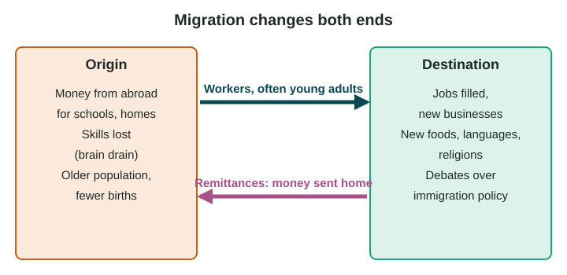

Migration changes places at both ends of the journey. This topic looks at those effects, past and present, sorted into four kinds: economic, political, cultural and demographic.
Two-way flows

When people move, money and ideas move too. A remittance is money a migrant sends to family or community back home. In 2024, India received about 129 billion US dollars in remittances, more than any other country, followed by Mexico, China, the Philippines and Pakistan (World Bank, Migration and Development Brief 41, December 2024, estimates). For smaller countries such as Nepal or Tajikistan, remittances are a far larger share of national income.
Effects on the place of origin
- Economic. Remittances pay for food, school fees, medicine and new houses. In Kerala, India, houses built with money from workers in the Gulf states line village roads. But families can come to depend on one worker abroad.
- Brain drain. Brain drain is the loss of educated, skilled people. Many doctors and nurses trained in Zimbabwe and Nigeria work in the United Kingdom, so their home countries lose workers they paid to train. When migrants return with new skills and savings, some of this is reversed.
- Demographic. Migrants are mostly young adults, so the origin grows older and may have fewer births. In places where men leave, many households are led by women.
- Past. After the famine of 1845 to 1852, more than a million people left Ireland, and its population fell by about a fifth from 1841 to 1851 (census of Ireland).
Effects on the destination
- Economic. Migrants fill jobs in farms, factories, hospitals and care homes, start businesses and pay taxes. They can also compete for some jobs and housing, which some residents worry about.
- Cultural. New foods, languages, religions and festivals change the look and life of a place. Neighborhoods such as Chinatown in San Francisco grew from migration in the 1800s.
- Political. Migration raises debates over immigration policy, schools, services and identity, at the local and national scales. Over time, migrants and their children vote and take office: Irish Americans became a major force in the politics of Boston and New York.
- Demographic. Migrants make the workforce younger and can raise the number of births, which matters most in aging countries.
| Kind | At the origin | At the destination |
|---|---|---|
| Economic | Remittances raise incomes; skills lost | Jobs filled; new businesses and taxes |
| Political | Governments court workers abroad | Debates over immigration policy |
| Cultural | New ideas and goods brought home | New foods, languages and religions |
| Demographic | Older population, fewer births | Younger workforce |
Effects have both benefits and costs, and people disagree about them. Describe each side with evidence; do not take sides.
Effects at two scales
Worked example. "At the local scale, remittances from Filipino workers abroad pay for school fees and new houses in their home villages, so more children stay in school. At the national scale, remittances bring the Philippines tens of billions of dollars a year (World Bank, 2024), a major source of foreign money for the whole country."
Naming the scale and a real place turns a vague point into one that earns credit.